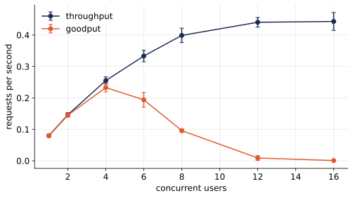

One leased L4 accelerator serves Qwen3-8B in 16 bits.
40,000 synthetic requests a day; 7,656 in the busiest hour; 55% Arabic; 18% ask about long event terms.
The complaint
Visitors wait, answers crawl, and the lease is the largest line of the digital services budget. Dr. Hanadi Al-Kathiri wants the objective met at a cost she can defend.
Who you work with
Five people own a piece of the decision
Person
Owns
Dr. Hanadi Al-Kathiri, head of visitor digital services
the service objective and the budget
Yamen Al-Hulaibi, platform engineer
the accelerator node and the engine settings
Asrar Al-Rifai, evaluation lead
the Arabic and English evaluation sets and their floors
Rawya Al-Twaim, data protection officer
what may be cached and shared between tenants
Kenan Al-Ajlan, finance analyst
the node lease and the hosted-API quote
You are Tamader Al-Harqan, the inference engineer asked to fix it.
What "fixed" means
The objective is per request, and it has three clocks
2.0 s
time to first token, at most
150 ms
time per output token, at most
1.0 s
longest pause between two tokens, at most
90%
of peak requests meet all three
Today's question. How far is the deployment from that, and can we say so before we measure?
Before the first lab
A laptop processor or a Colab runtime is enough
Clone the course repository and open labs/.
Install uv, then uv sync in labs/.
Or open any lab in Colab from the course page: the first cell clones the repository.
No model is downloaded to your laptop, and no key is needed today.
uv sync
uv run prepare_data.py # optional: same bytes
uv run jupyter lab
Two tiers
The labs run a simulator of the engine; a notebook GPU can run the real one
Simulator tier (default)
A course simulator of a serving engine: continuous batching, a paged cache with prefix hashing, chunked prefill, preemption. Calibrated from the real model card and spec sheet. Every supplied run comes from it and is marked synthetic.
Engine tier (optional)
On a free notebook GPU, an OpenAI-compatible engine with a small open-weight model. The same load generator measures it. The model is downloaded into the notebook runtime, never to a laptop.
Today
Model the cost first
Session 1 · Prefill and decode are different problemsWhy a prompt is processed at the speed of arithmetic and an answer at the speed of memory.
Session 2 · Key-value cache arithmeticThe cache, not the weights, decides how many visitors are served at once.
Session 3 · Goodput against an objectiveRequests per second that meet the whole latency objective, measured from a stream.
Session 4 · Curves, not single numbersA capacity is a point on a curve with an error bar, not a number from one run.
Session 1
Prefill and decode are different problems
Compute the operations and bytes of one token for a model card
Place prefill and decode on the roofline of an accelerator
Predict time to first token and time per output token from first principles
01
One request, two phases
The prompt is read in one pass; the answer is written one token at a time
1 · Prompt2,000 tokens arrive
→
2 · Prefillall 2,000 in one pass
→
3 · First tokenthe visitor sees a reply start
→
4 · Decodeone pass per token
Two phases, two bottlenecks. Prefill does a lot of work per byte read; decode does almost none.
Lab 1.1 · task 2
A token costs about two operations per weight, and a read of every weight
Model
Operations per token
Bytes read per step (16-bit)
Operations per byte
Qwen3-8B (base)
15.14 G
16.40 GB
0.92
Musamir-mini (1.7B student)
3.42 G
3.40 GB
1.01
Operations: 2 × (non-embedding parameters + the output head, hidden size × vocabulary). Bytes: every parameter, 2 bytes each.
The roofline
Below the ridge a step waits on memory; above it, on arithmetic
Intensity = operations ÷ bytes moved.
Ridge point = reachable operations per second ÷ reachable bytes per second.
On the L4: 121 dense BF16 TFLOPS at 45%, 300 GB/s at 80%: 227 operations per byte.
The sheet prints 242 TFLOPS with sparsity; dense is half.
Recap from AE-206
The roofline of a layer and the efficiencies of an accelerator are in AE-206, Day 1. Here we apply it to the two phases of a language model.
Lab 1.1 · task 3
A 2,000-token prefill is bound by arithmetic, eight times over
Compute time0.578 s
Weight reads0.068 s
2,000 tokens share one read of the weights. The prompt's length sets the time to first token.
Lab 1.1 · task 4
Decoding one token does 0.92 operations per byte: it waits on memory
0.92
operations per byte at batch 1
246
sequences decoded together to reach the ridge
Batching is free until the ridge. Each extra sequence in a decode step reuses the same weight read.
Lab 1.1 · task 5
The hand prediction lands within 10% of the single-request run
Predicted
Simulated run
Time to first token, 2,000-token prompt
0.578 s
0.599 s
Time per output token
68.3 ms
73.6 ms
The gap is the step overhead and the cache reads, which grow with the context.
Checkpoint
Where does the time go?
Musamir decodes one visitor's answer alone on the L4 at about 74 ms a token. Yamen proposes a card with twice the TFLOPS and the same memory bandwidth. What happens to the time per token?
It halves, to about 37 ms
It barely changes: decode waits on reading the weights
It rises, because prefill takes more of each step
It falls only if the card has more memory
Why. At 0.92 operations per byte a decode step is far below the ridge point: its time is the time to read 16.4 GB, set by bandwidth.
Lab 1.1 · 25 min
Operations and bytes per token
By hand, without AI: operations and bytes per token for two models on the L4, which resource bounds each phase, and a prediction checked against a single-request run.
A 2,000-token conversation holds 0.29 GB of cache while it is served.
Read the model card
Grouped-query attention cut the cache by four
32 query heads
Used during the step, never stored.
8 key-value heads
Stored for every token: the cache is a quarter of what 32 heads would need.
What goes wrong. Sizing with num_attention_heads overestimates the cache four times and underestimates concurrency four times.
Lab 1.2 · task 2
After the weights, 3.6 GB of the 24 are left for conversations
Card24.0 GB
Engine may use (90%)21.6 GB
Weights, 16-bit16.4 GB
Reserve1.6 GB
Cache3.6 GB
Paged cache
The engine hands out the cache in blocks of 16 tokens
A conversation takes blocks as it grows, not a slab sized for the longest possible answer.
Musamir's engine reports 1,525 blocks = 24,400 tokens at start.
Blocks can be shared between requests with the same beginning: Day 2's prefix cache.
When no block is free, a running sequence is preempted and recomputed later.
Lab 1.2 · tasks 3 to 5
Three context lengths, three limits, all within the 25% band
Tokens per conversation
Predicted
Engine held at most
Preemptions
2,000
12.2
14
14
4,000
6.1
7
13
8,000
3.0
3
0
The engine admits at the prompt's length, briefly holds one more, then preempts as answers grow.
Preemption
A full cache preempts during decoding, not only at admission
Every answer token needs room; at 16 tokens a block, a sequence asks for a new block every 16 tokens.
No free block: the engine frees the newest sequence and recomputes it later.
The visitor sees it as a sudden stall, and the work is done twice.
Seeded fault 2
Tomorrow you meet a deployment that preempts all evening. This slide is how you will recognise it.
Lab 1.2 · stretch
With 8-bit weights the cache more than triples
24,400
tokens of cache, 16-bit weights
80,016
tokens of cache, 8-bit weights
Halving the weights frees 8.2 GB, all of it for conversations. Whether quality holds is Day 3's question.
Checkpoint
How many fit?
Another team serves a model with 32 layers, 32 query heads and 8 key-value heads of size 128, with a 16-bit cache, and has 4.2 GB left for the cache. About how many 4,000-token conversations fit at once?
About 16
About 2
About 4
About 8
Why. 2 × 32 × 8 × 128 × 2 = 131,072 bytes per token; 4,000 tokens is 0.52 GB; 4.2 GB holds about 8.
Lab 1.2 · 25 min
Concurrency limit at three context lengths
Predict how many sequences fit in the cache at 2,000, 4,000 and 8,000 tokens, then check against the engine's block count and a saturation run.
Concurrency is the number of visitors waiting for an answer at once
Closed loop: each user sends the next request when the last answer ends, so the load is a number of users, not a rate.
Easy to control and repeat, which is why curves are drawn over it.
Kinder than reality: when the engine slows, the users slow too.
Lab 1.3 · tasks 3 and 4
From 8 to 24 users, throughput rose and goodput fell to zero
Users
Throughput (req/s)
Goodput (req/s)
Attainment
2
0.20
0.20
100%
8
0.28
0.09
31%
24
0.51
0.00
0%
The baseline as deployed, through the HTTP stand-in, quick-mode run.
Lab 1.3 · task 5
At 24 users a request spends 28 seconds in the queue
Users
Queue (s)
Prefill (s)
Decode (s)
2
0.00
0.67
12.68
8
0.14
1.33
17.70
24
28.19
3.44
19.05
Mean seconds per request, from the engine's own times in the simulator.
Stage timings from the client's clock
In the photo pilot, the upload takes 86% of the time to first token
Stage of a photo question
Median (s)
Share
Phone prepares the photo
0.00
0%
Upload
3.85
86%
Server decodes and resizes
0.14
3%
Queue
0.11
3%
Image encoding and prefill
0.45
9%
Time to first token: median 4.55 s, p90 8.21 s; 1% of photo questions meet 2.0 s. Synthetic: 3.4 MB median photo, 7 Mbit/s median uplink.
The fix, confirmed by a rerun
The model keeps 1,024 pixels, so the phone should send only those
The pilot model resizes every photo to 1,024 pixels on the long side; most of the 12 megapixels cross the network to be thrown away.
The app resizes and recompresses before upload: 3.4 MB becomes 0.24 MB.
The model receives an image of the same size, so its tokens and prefill do not change.
Median or share
Before
After
Phone prepares (s)
0.00
0.07
Upload (s)
3.85
0.36
Server resizes (s)
0.14
0.01
TTFT p90 (s)
8.21
1.26
Meet 2.0 s
1%
100%
Your turn · a parallel case
Athar's guides wait too: which stage do you work on?
Stage of a photo question
Median (s)
Share
Phone prepares the photo
0.08
2%
Upload
0.16
5%
Server decodes and resizes
0.01
0%
Queue
2.44
80%
Image encoding and prefill
0.45
13%
Guides ask about artefact photos at the evening peak, over venue Wi-Fi; their app already sends 0.38 MB photos. TTFT p90 5.22 s; 10% meet 2.0 s.
Checkpoint
Which number goes in the report?
A run at 16 users shows a mean TTFT of 1.7 s, a p90 TTFT of 9 s, a TPOT p90 of 95 ms, no stall over 1 s and 0.44 requests per second. Hanadi asks whether the objective is met. What do you report?
Yes: the mean TTFT is under 2 s
Yes: it serves 0.44 requests per second
The share of requests that met all three, which the TTFT p90 says is under 90%
Yes: the TPOT p90 is under 150 ms
Why. If the 90th percentile of TTFT is 9 s, more than 10% of requests waited over 2 s, so attainment is under 90% whatever the mean.
Lab 1.3 · 25 min
The baseline at three concurrency levels
Load the as-deployed Musamir through a streaming HTTP endpoint at three concurrency levels and compute goodput against the objectives.
Measure TTFT, TPOT and end-to-end time from the stream 6 min
Load at 2, 8 and 24 concurrent users 6 min
Goodput against the objectives 5 min
Where the time went: queue, prefill, decode 4 min
✱ Stretch: Point the same load generator at a real engine on a notebook GPU
Session 4
Curves, not single numbers
Build a goodput curve over concurrency with repeated runs
Read the knee of a curve and state a capacity with its variance
Judge whether a benchmark is valid
04
Variance
At 8 users, the p90 TTFT of three runs spreads by 0.7 seconds
1.96 s
mean p90 TTFT of three runs
± 0.68 s
standard deviation between them
Near the knee, small changes in which requests arrive together decide who waits. A single run could have said 1.3 s or 2.6 s.
Lab 1.4 · task 4
The baseline's goodput peaks at 4 users and collapses by 12

Mean of three runs per point, error bars one standard deviation. Synthetic: the course simulator.
Lab 1.4 · task 2
Seven points, three runs each, raw rows kept
Users
Goodput
± sd
Throughput
TTFT p90 (s)
TPOT p90 (ms)
1
0.079
0.003
0.080
1.41
75
2
0.120
0.010
0.146
1.39
84
4
0.149
0.020
0.255
1.42
99
6
0.140
0.033
0.333
1.51
110
8
0.116
0.032
0.399
1.96
122
12
0.020
0.012
0.441
11.42
128
16
0.006
0.009
0.443
20.81
132
Benchmark validity
A curve is evidence only if someone else can rerun it
The same trace, or a named sample of it, with its seed.
Warm-up dropped: the first 10% of each run here.
Enough requests per point to fill the engine many times.
Three or more repeats, and the spread reported.
The raw per-request rows kept beside the plot.
The configuration and the engine version recorded.
The objectives written on the plot.
Closed or open loop stated.
Lab 1.4 · stretch
Replayed at real arrival times, the peak queues for minutes
Closed loop, 16 users
0.44 requests per second, p90 TTFT 21 s. The users waited for each other.
Open loop, two minutes of the peak
0.45 requests per second served while 2.13 arrive; p90 TTFT 372 s and growing.
What goes wrong. A closed-loop test at "high concurrency" can look survivable while real arrivals would grow the queue without bound.
Lab 1.4 · task 5
A capacity claim names the point, its spread and the objectives
Claim. The baseline serves at most 0.15 ± 0.02 good requests per second (mean ± sd of 3 runs) at 4 concurrent users, under TTFT ≤ 2.0 s, TPOT ≤ 150 ms and no stall over 1.0 s; beyond it goodput falls while throughput keeps rising.
The evening peak brings 2.13 requests per second: fourteen times this.
Checkpoint
Is the new setting better?
At 8 users, one run with a new engine setting gives a p90 TTFT of 1.5 s against the baseline's 1.96 s mean (sd 0.68 over three runs). What do you conclude?
Nothing yet: the gap is inside the baseline's spread; run three repeats
The setting cuts TTFT by a quarter
It is better because throughput did not drop
The setting is worse: the result is noisy
Why. A 0.46 s difference against a standard deviation of 0.68 s between runs is noise until repeats show otherwise.
Lab 1.4 · 25 min
A seven-point goodput curve
Combine supplied runs at six concurrency levels with three repeats of your own at a seventh, plot the curve with its spread and state the capacity.